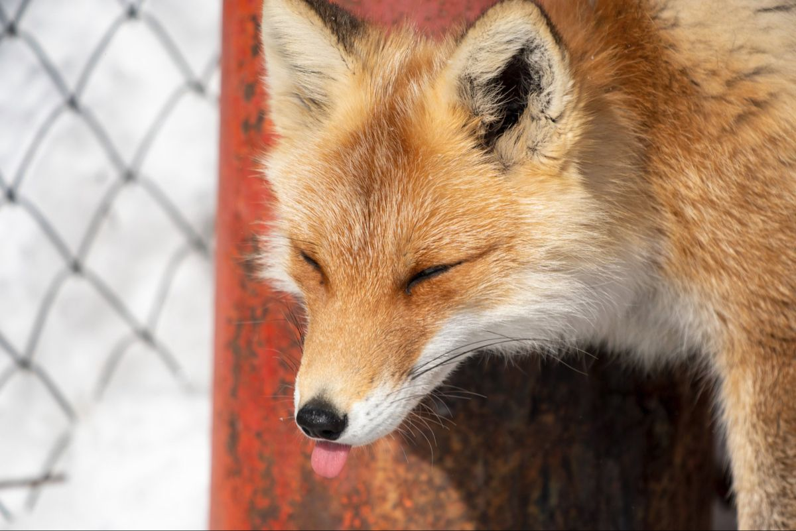
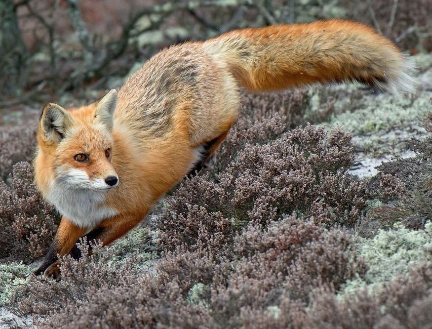
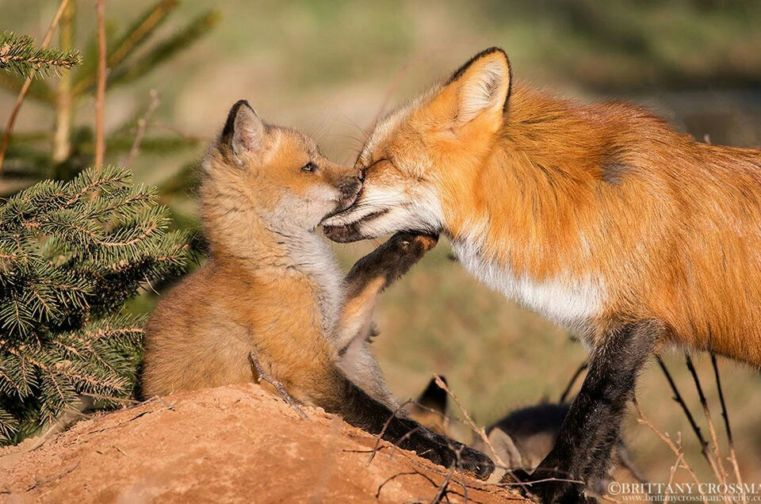
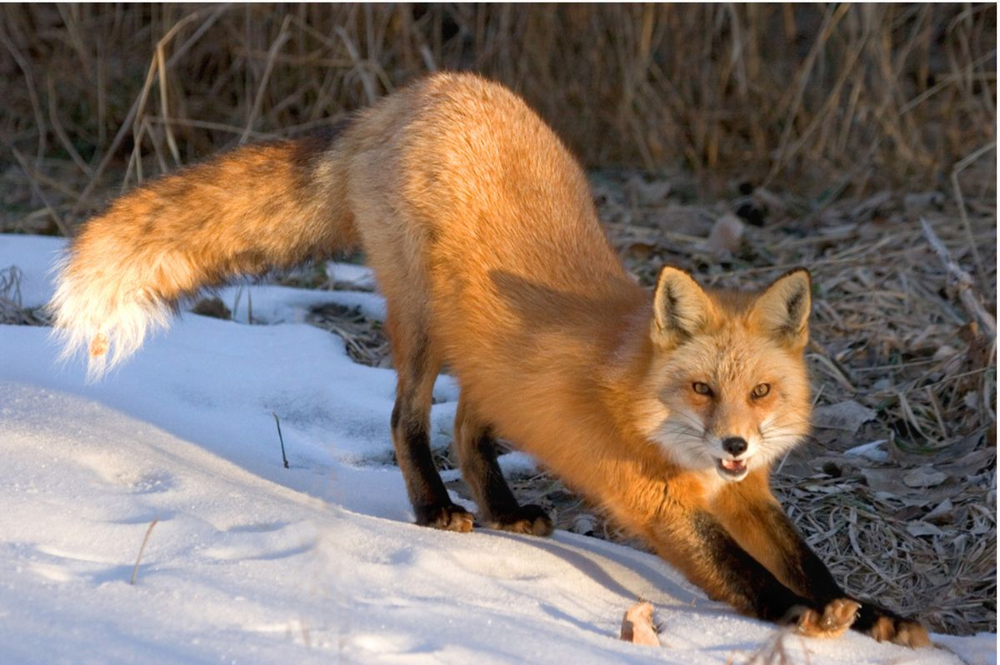
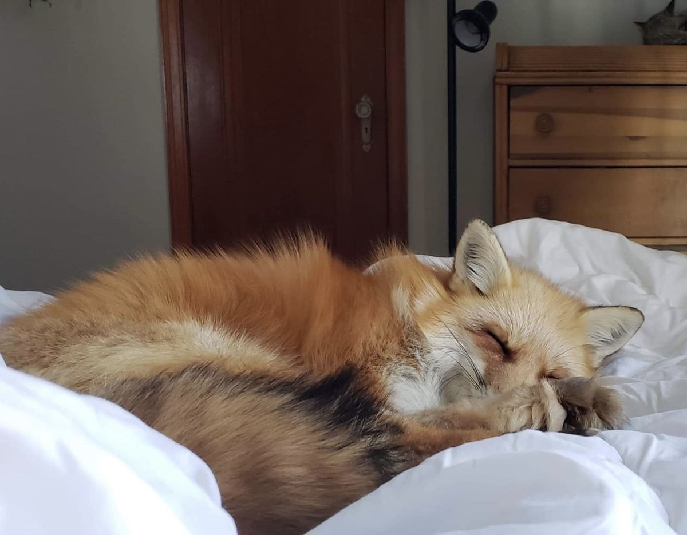
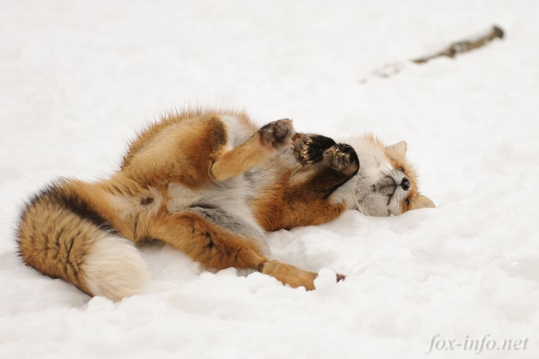

🦊 В одном из экспериментов лисы, в отличие от своих диких сородичей, научились понимать человеческий жест — указательный палец — и находить по нему угощение. Это редкая способность, говорящая о выдающемся интеллекте.
Ты сообразительна, так же хорошо, как лиса вычисляет добычу под снегом. Ты умеешь находить нестандартные решения и просчитывать ситуацию на несколько шагов вперёд.

🦊 В отличие от волков, которые живут стаями, лисы — прирожденные одиночки. Они ревностно охраняют свою территорию и предпочитают охотиться в одиночку. При этом они прекрасно адаптируются к жизни рядом с человеком.
Ты — самодостаточный человек. Ты умеешь быть одна и вполне способна постоять за себя и свои личные границы, если тебя доконать.

🦊 Хотя лисы одиночки, в период воспитания потомства они создают пары. Самец заботливо ухаживает за самкой и приносит еду в нору. В случае опасности один из родителей отвлекает преследователей, уводя их от логова.
Ты, как лиса, готова защищать и оберегать тех, кто тебе дорог, и ты умеешь позаботиться о других.

🦊 Лисы очень "выразительны". У них богатый "словарный запас" — они издают десятки разных звуков, чтобы общаться. В культуре слово "foxy" означает не только хитрый, но и привлекательный, обаятельный.
Ты умеешь быть разной: то загадочной, то игривой, то серьёзной. С тобой невозможно заскучать, и ты неизменно притягиваешь к себе внимание.

🦊 Существует знаменитый сибирский эксперимент, в котором лис веками отбирали по признаку дружелюбия. В итоге они стали не только ручными, но и научились лучше понимать людей.
Лиса — дикий и свободный зверь, но если она решает довериться человеку, то становится самым преданным и понимающим другом. Ты тоже не даёшь свою дружбу каждому, и это дорогого стоит.

🦊 Взрослые лисы обожают играть. Они могут кататься с небольших холмов, возиться с найденными предметами или просто носиться друг за другом без всякой причины. Для них игра — это способ получать удовольствие от момента.
Ты не боишься выглядеть смешной или ребячливой. Умеешь радоваться простым вещам, как лиса — первому снегу или солнечному лучу. С тобой мир становится проще.
«Говорят, лис нельзя приручить.
Но если уж они доверяют — это навсегда.»